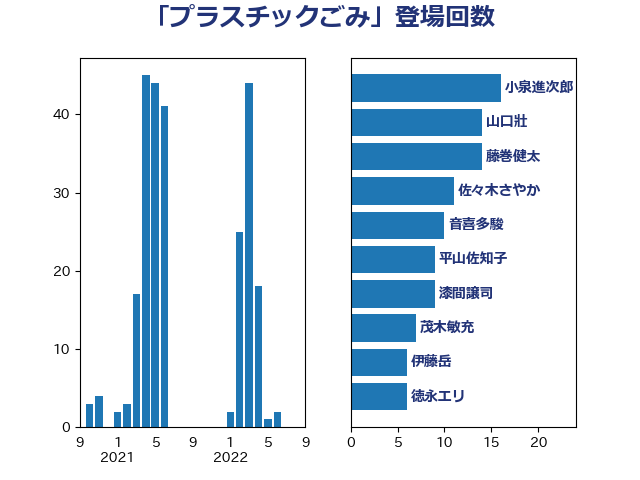

単語「プラスチックごみ」

| 小泉進次郎 | 自由民主党 | 16 回 |
| 山口壯 | 自由民主党 | 14 回 |
| 藤巻健太 | 日本維新の会 | 14 回 |
| 佐々木さやか | 公明党 | 11 回 |
| 音喜多駿 | 日本維新の会 | 10 回 |
| 平山佐知子 | 無所属 | 9 回 |
| 漆間譲司 | 日本維新の会 | 9 回 |
| 茂木敏充 | 自由民主党 | 7 回 |
| 伊藤岳 | 日本共産党 | 6 回 |
| 徳永エリ | 立憲民主党 | 6 回 |
| 笹川博義 | 自由民主党 | 6 回 |
| 末松信介 | 自由民主党 | 5 回 |
| 大岡敏孝 | 自由民主党 | 4 回 |
| 林芳正 | 自由民主党 | 4 回 |
| 寺田静 | 無所属 | 3 回 |
| 小野田紀美 | 自由民主党 | 3 回 |
| 滝沢求 | 自由民主党 | 3 回 |
| 田村貴昭 | 日本共産党 | 3 回 |
| 磯崎仁彦 | 自由民主党 | 3 回 |
| 金子恵美 | 立憲民主党 | 3 回 |
| 三木亨 | 自由民主党 | 2 回 |
| 務台俊介 | 自由民主党 | 2 回 |
| 山下芳生 | 日本共産党 | 2 回 |
| 柳ヶ瀬裕文 | 日本維新の会 | 2 回 |
| 源馬謙太郎 | 立憲民主党 | 2 回 |
| 石井準一 | 自由民主党 | 2 回 |
| 竹谷とし子 | 公明党 | 2 回 |
| 篠原孝 | 立憲民主党 | 2 回 |
| 遠藤良太 | 日本維新の会 | 2 回 |
| 高木かおり | 日本維新の会 | 2 回 |
| 中西祐介 | 自由民主党 | 1 回 |
| 堀内詔子 | 自由民主党 | 1 回 |
| 小田原潔 | 自由民主党 | 1 回 |
| 横沢高徳 | 立憲民主党 | 1 回 |
| 清水貴之 | 日本維新の会 | 1 回 |
| 片山大介 | 日本維新の会 | 1 回 |
| 猪口邦子 | 自由民主党 | 1 回 |
| 田名部匡代 | 立憲民主党 | 1 回 |
| 須藤元気 | 無所属 | 1 回 |
| 高橋光男 | 公明党 | 1 回 |
| 鬼木誠 | 立憲民主党 | 1 回 |
| 鶴保庸介 | 自由民主党 | 1 回 |